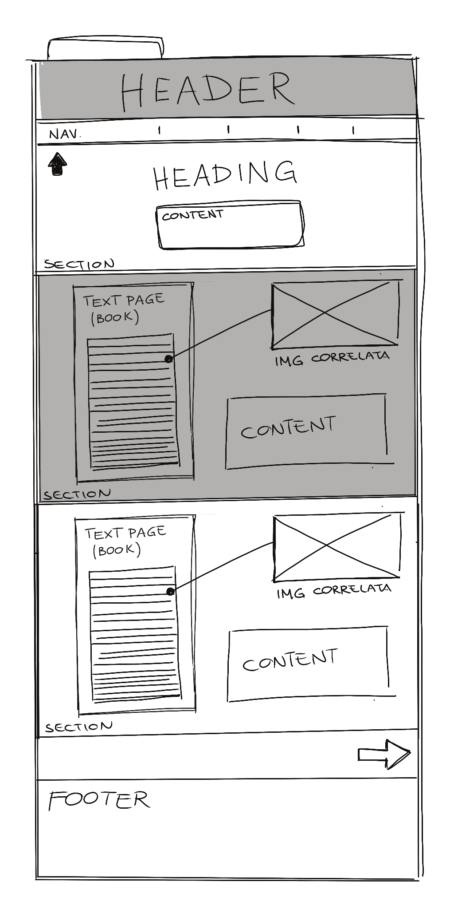
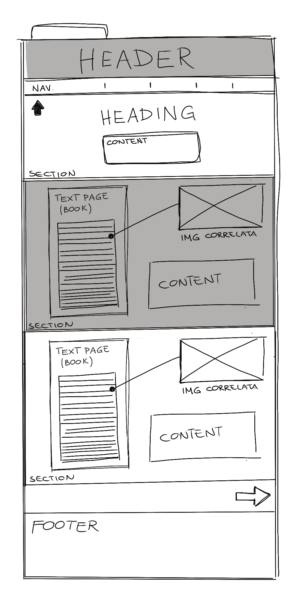
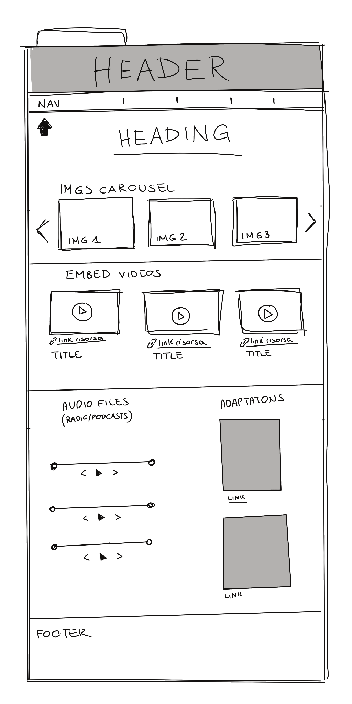
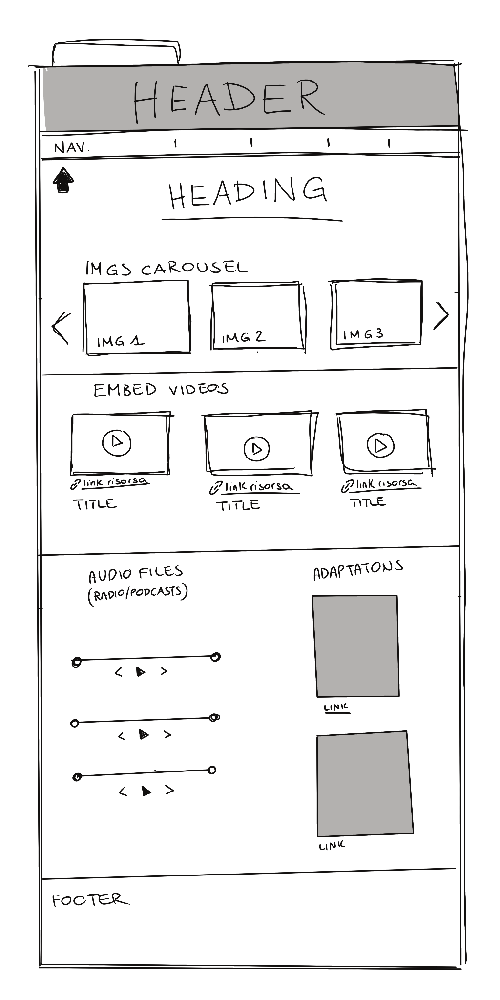

SIBILLA ALERAMO
- https://www.storicang.it/a/sibilla-aleramo-donna-e-scandalosa-voglia-di-vivere_15738
- https://www.europeana.eu/it/search?page=1&view=grid&query=Sibilla Aleramo
- https://www.enciclopediadelledonne.it/edd.nsf/biografie/sibilla-aleramo-rina-faccio
- https://www.raiscuola.rai.it/letteraturaitaliana/articoli/2021/01/Un-omaggio-a-Sibilla-Aleramo-2a446d9f-da5c-4420-ad77-bc402a112389.html
- https://parita.regione.emilia-romagna.it/piani-programmi-progetti/vie-en-rose/schede/aleramo-sibilla
- https://www.iodonna.it/attualita/storie-e-reportage/2023/12/07/sibilla-aleramo-tutto-in-nome-della-liberta/
"UNA DONNA"
- https://www.studenti.it/una-donna-di-sibilla-aleramo-riassunto.html
- https://it.wikipedia.org/wiki/Una_donna
- https://lucysullacultura.com/per-aleramo-larte-puo-plasmare-un-mondo-piu-libero/
- https://www.chiacchiereletterarie.it/una-donna-dentro-lanima-di-sibilla-aleramo/
- https://www.teche.rai.it/2020/01/una-donna-sibilla-aleramo/
- https://amantedilibriblog.wordpress.com/2021/04/09/una-donna-sibilla-aleramo/
- https://www.qlibri.it/narrativa-italiana/romanzi/una-donna/
CONCLUSIONE
Non ci sono siti dedicati specificatamente a Sibilla Aleramo come autrice; è possibile trovare informazioni sulla sua vita e/o un suo romanzo, ma raramente vanno oltre a poche info biografiche e al riassunto della trama. Non ci si occupa spesso della contestualizzazione delle sue opere nel panorama culturale del tempo, della ricezione dell’opera dalla pubblicazione ai giorni nostri, o di altre opere pubblicate da lei.
Tra i siti più vicini all’idea del progetto sono Enciclopedia delle donne e IO Donna, anche se nessuno dei due si occupa principalmente del romanzo;
Enciclopedia delle donne si presente come una raccolta eterogenea concentrata su diversi personaggi, con immagini, aforismi, caroselli di contenuti, TAG cloud.
IO Donna è principalmente l’edizione digitale di un magazine cartaceo, quindi dedicato a pubblicazioni periodiche; interessante l’impostazione grafica, le sezioni titolate, la colonna unica per testo e immagini. Sarebbe utile in questo articolo un indice interno alla pagina, con link ai paragrafi titolati.
3) STRUTTURA


SCHEMA DELLE CATEGORIE
- TIPO DI OGGETTO: Divisi a loro volta in tre categorie principali: (1) Documenti e File testo; (2) Multimediale (immagine, file audio, video, embedded map); (3) Forum ed interazioni;
- FORMATO: JPG, PDF, PNG, MP4;
- DATA/PERIODO: data di pubblicazione se si tratta di un articolo, di un libro, commento o risorsa multimediale; periodo di realizzazione se si tratta di una fotografia/documento senza datazione specifica;
- LINGUA
- PAROLE CHIAVE: tagging dei file con parole chiave, per eseguire una navigazione interna Google-like;
4) LAYOUT


 

 



5) USABILITÀ
1. Architettura dell'Informazione
L'architettura dell'informazione si snoda dalla Home Page del sito Web; quest’ultima è concepita come prima interfaccia e responsabile della presentazione del sito. I quattro argomenti principali sono:
- TESTO DIGITALE: L’edizione di riferimento per il testo digitale è “Una Donna” di Universale Economica Feltrinelli (2023); riproduzione del testo del libro, diviso in capitoli, navigabile per sezioni, argomenti, parole chiave; il testo è arricchito da altri contenuti, come immagini storiche, aforismi e didascalie; se in determinati passaggi è ritenuto rilevante, il testo di riferimento verrà messo a confronto con edizioni diverse.
- AUTRICE: sezione con contenuti su biografia, mappe interattive con i luoghi della vita, fotografie storiche con autrice e soggetti a lei vicini e galleria di altre opere di Sibilla Aleramo, con titoli e link ad altri siti e risorse online a loro dedicati.
- MEDIA GALLERY: una sezione unica che presenta la collezione di tutte le immagini, anche se già presenti in altri punti del sito; inoltre, embedded video da varie piattaforme di streaming, audio tratti da programmi radio e podcast, collezione di locandine e link a diversi adattamenti delle sue opere (mostre, rappresentazioni teatrali, serie televisive);
- FORUM: spazio per costruire una community tra gli utenti; periodicamente vengono postati, dalla redazione, link a pubblicazioni (articoli di giornale, riviste, libri, saggi) legati a Sibilla Aleramo e alla sua cerchia; gli utenti registrati sono invitati alla lettura degli spunti settimanali (collegati agli articoli) e a commentare a riguardo nello spazio dedicato.
Per muoversi tra questi contenuti sono disponibili i seguenti canali:
- Menu di navigazione: la navigazione principale si basa su un sistema orizzontale, che presenta l’utente con le quattro sezioni principali su cui è costruito il sito; ogni sezione sarà identificabile con etichette concise e comprensibili; cliccando sugli elementi del menù si viene reindirizzati alla pagina; ove necessario, nelle pagine sarà presente un indice con gli elementi della navigazione secondaria, per muoversi all’interno della pagina.
- Dropdown: dalla navigazione principale, le sezioni che ne necessitano avranno un dropdown menù con gli elementi della navigazione secondaria; il dropdown apparirà al passaggio del mouse; cliccando sugli elementi della sezione secondaria si viene indirizzati alla pagina primaria, al paragrafo specifico.
- Breadcrumbs: presenti in tutte le pagine del sito, per agevolare la navigazione e chiarire all'utente in che punto della struttura della pagina ci si trova.
2. Aspetto e Design Visivo
Gli elementi chiave includono:
- Design coerente e pulito: utilizzo di uno schema di colori e di immagini di pochi toni caldi; contribuisce alla palette sintetica il fatto che molte immagini siano in bianco e nero. L'interfaccia avrà un aspetto lineare, riducendo gli elementi distrattivi (mantenuto un banner laterale per le pubblicità, sponsor che permettono di mantenere la fruizione gratuita da parte dell’utente) e mantenendo un layout chiaro e ordinato.
- Contrasto e gerarchia visiva: l'uso di contrasto tra i colori di sfondo e il testo garantirà la leggibilità, mentre una chiara gerarchia visiva guiderà l'utente attraverso le informazioni, evidenziando i contenuti principali e facilitando l’interazione.
- Contrasto e gerarchia visiva: l'uso di contrasto tra i colori di sfondo e il testo garantirà la leggibilità, mentre una chiara gerarchia visiva guiderà l'utente attraverso le informazioni, evidenziando i contenuti principali e facilitando l’interazione.
3. Tipografia
La scelta dei font e il loro utilizzo verranno curati nei seguenti aspetti:
- Scelta dei font: i font selezionati sono della famiglia Arial, Helvetica; la scelta è stata fata per garantire leggibilità fluida e lettura della pagina da tutti i principali browser possibili.
- Dimensione e spaziatura: i testi saranno dimensionati per facilitare la lettura, con una gerarchia chiara tra titoli, sottotitoli e corpo del testo. La spaziatura tra le righe (line-height) e tra i paragrafi (margin) verrà ottimizzata per evitare che il testo risulti troppo compatto o difficile da seguire.
- Consistenza tipografica: sarà garantito l’utilizzo di una tipografia coerente su tutto il sito. Ogni tipo di contenuto (titoli, sottotitoli, paragrafi, citazioni, call-to-action) avrà uno stile definito e uniforme.
- Supporto per l’accessibilità: sarà garantito un contrasto sufficiente tra testo e sfondo; questa funzione è pensata per semplificare la lettura da parte di utenti con disabilità visive.
6) SERVIZI
Vengono offerti all’utente:
- CONDIVISIONE: il sito web, nella sua interezza, è condivisibile su piattaforme mediatiche tramite l’URL; viene fornito un bottone di condivisione. Accanto al tasto “condividi”, sono presenti i link (sotto forma di icone) ai profili social media del sito, per restare aggiornati su novità e pubblicazioni anche se non iscritti alla newsletter;
- DOWNLOAD: alcuni Item (immagini) sono scaricabili dall’utente liberamente, senza watermark, dal momento che si tratta di immagini storiche e non oggetti prodotti dalla redazione;
- ACCOUNT e COMMENTI: è possibile (ma non obbligatorio) accedere al sito collegando la propria mail; non è stata progettata un’area dedicata al profilo utente, ma è possibile impostare un nickname e un’immagine di profilo (non trattandosi di un vero e proprio social media non è scopo del sito occuparsi di pagine personali; si era ipotizzata inizialmente anche una cronologia di navigazione interna ed uno storico dei commenti, poi scartate proprio per lo stesso motivo); tramite mail, se iscritti alla newsletter, gli utenti verranno notificati della pubblicazione di articoli per le discussioni periodiche, e di eventuali reazioni a commenti precedenti
- COLLEGAMENTI AD ALTRE RISORSE: oltre alle già citate pagine dei social media, il sito si fonda in buona parte sulla diffusione (con dovuta citazione della risorsa originale) di materiali prodotti da altri siti web, tra cui: embedded video (principalmente da YouTube, o RaiScuola ma sotto forma di link), embedded map (da Google Maps), articoli di giornale (da qualunque testata affidabile che se ne occupi, es. National Geographic e/o simili), immagini di varia natura, audio; Ogni oggetto sarà opportunamente collegato tramite link alla risorsa originale, sia per correttezza verso i diritti d’autore, sia per permettere agli utenti di approfondire l’argomento attraverso le stesse fonti della redazione.
- TAG CLOUD: le categorie della collezione, se pertinenti, vengono presentate all’utente sotto forma di tag cloud (magari le parole chiave, il tipo di media usato, l’anno o il luogo); oltre ad essere uno strumento visivo accattivante, il tag cloud permette così all’utente di visualizzare r familiarizzare con le keyword del sito, per meglio gestire la propria ricerca.